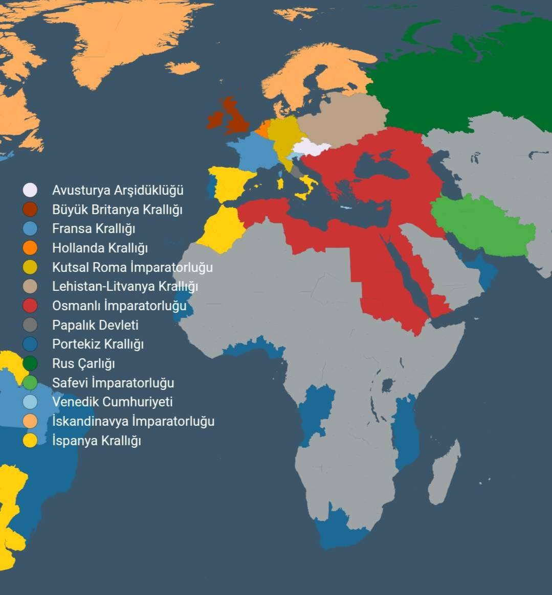

Avrupa, XVI. yüzyılın ortalarından itibaren yalnızca krallıkların değil, tek bir hanedanın gölgesinde şekillenen bir kıta haline gelmiştir. Bu dönem, din, siyaset ve hanedan içi mücadelelerle doludur.
Alternatif tarih akışının ilk kırılma noktası. Kutsal Roma-Germen İmparatorluğu merkezi otorite altında birleşmeye başlar.
Katoliklik resmî ve baskın mezhep haline gelir. Protestan hareketleri ve direnişleri etkisizleştirilir.
Ekonomi ve ticaret alanında Alman Gümrük Birliği (Zollverein benzeri) kurularak merkezi ekonomik güç sağlanır.
İmparator Gabriel’in yönetimi altında Avrupa, siyasi ve dini güç dengeleriyle şekillenmeye başlar.
Prens ve prenseslerin yetişmesiyle, hanedan içi rekabetler ve politik RP’nin merkezi başlar.
Batı ve Doğu Avrupa’daki çatışmalar, diplomasi ve hanedan içi mücadelelerle alternatif tarih çizgisi tamamlanır.
Katoliklik resmî ve baskın mezheptir. Protestanlık minimize edilmiştir. Ortodoks dünya (Rusya) ile ideolojik çatışma devam eder. Osmanlı ile pragmatik, diplomatik ve ticari ilişkiler mevcuttur.
İtalya yarımadası ve Venedik, Ceneviz, Napoli şehirleri üzerinde mücadele.
Doğu sınırlarında askeri ve diplomatik çatışmalar.
Orta Avrupa ve Balkanlar’da denge mücadelesi.
Ticaret ve deniz gücünü sınırlamak için girişilen stratejik hamleler.
